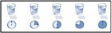

RÉSUMÉ DES CARACTÉRISTIQUES DU PRODUIT
ANSM - Mis à jour le : 15/05/2014
COLOKIT, comprimé
2. COMPOSITION QUALITATIVE ET QUANTITATIVE
Phosphate monosodique monohydraté ............................................................................................. 1102 mg
Phosphate disodique anhydre ............................................................................................................ 398 mg
Pour un comprimé.
Pour la liste complète des excipients, voir rubrique 6.1.
Comprimé.
Comprimé ovale, blanc à blanc cassé avec les gravures « SLX » et « 102 ».
4.1. Indications thérapeutiques
Lavage colique assurant la préparation des patients préalablement à la chirurgie colique ou aux explorations endoscopiques ou radiologiques du côlon.
4.2. Posologie et mode d'administration
Ne pas administrer aux enfants de moins de 18 ans.
Chez le sujet âgé, la posologie est identique à celle de l'adulte.
La dose usuelle de COLOKIT est de 32 comprimés. La dose totale de phosphates est de 32,79 g.
La prise de COLOKIT comprimé doit commencer la veille de l'examen. Le jour précédent l'examen, prendre un petit-déjeuner léger et pauvre en fibres (café ou thé avec ou sans sucre, biscottes, beurre ou équivalent, gelée de fruits ou miel). A partir de midi, seule la prise de « liquide clair » est autorisée. Le « liquide clair » peut être de l'eau, une soupe légère, des jus de fruits dilués sans pulpe, du thé léger ou du café noir, des sodas légers, bicarbonatés ou non.
COLOKIT comprimé sera administré selon les modalités suivantes:
Schéma d'administration conseillé:
Le soir précédent l'examen:
· Prendre 4 comprimés avec 250 ml d'eau (ou un autre liquide clair),
· Puis recommencer 4 fois de suite dans les mêmes conditions en espaçant les prises de 15 minutes, soit au total 20 comprimés à avaler.

Le jour de l'examen (en commençant 4 à 5 heures avant l'examen):
· Prendre 4 comprimés avec 250 ml d'eau (ou un autre liquide clair),
· Puis recommencer 2 fois de suite dans les mêmes conditions en espaçant les prises de 15 minutes soit au total 12 comprimés à avaler.
Schéma d'administration alternatif en cas de coloscopie matinale:
Pour les coloscopies programmées tôt le matin, il est possible d'adapter le schéma d'administration en prenant la totalité des comprimés le soir précédant l'examen, et en respectant un intervalle d'au moins 4 heures entre le début de la prise des 20 premiers comprimés (à absorber à raison de 4 comprimés avec 250 ml d'eau ou un autre liquide clair toutes les 15 minutes) et la prise des 12 derniers comprimés (à absorber à raison de 4 comprimés avec 250 ml d'eau ou un autre liquide clair toutes les 15 minutes).
Exemple de schéma:
A 18H00:
· Prendre 4 comprimés avec 250 ml d'eau (ou un autre liquide clair),
· Puis recommencer 4 fois de suite dans les mêmes conditions en espaçant les prises de 15 minutes, soit au total 20 comprimés à avaler.
A 22H00:
· Prendre 4 comprimés avec 250 ml d'eau (ou un autre liquide clair)
· Puis recommencer 2 fois de suite dans les mêmes conditions en espaçant les prises de 15 minutes, soit au total 12 comprimés à avaler.
Les patients devront être informés de l'importance de suivre rigoureusement le régime hydrique recommandé et de boire le plus de liquide possible pour remplacer les fluides perdus par l'augmentation du péristaltisme intestinal.
Le fait de boire de grandes quantités de liquide clair permet également de garantir la propreté colique au moment de l'examen.
L'utilisation de COLOKIT comprimé ne doit pas être répétée avant au moins 7 jours.
Aucun traitement laxatif supplémentaire (particulièrement ceux contenant du phosphate de sodium) ne doit être pris simultanément.
· Chez les enfants de moins de 18 ans.
· Chez les patients âgés de plus de 75 ans.
· En cas de nausées, de vomissements ou de douleurs abdominales,
· En cas d'hypersensibilité aux principes actifs ou à l'un des excipients, en particulier au macrogol.
Ne pas utiliser chez les patients souffrant :
· d'une insuffisance rénale cliniquement significative,
· d'une hyperparathyroïdie primitive associée à une hypercalcémie,
· d'une insuffisance cardiaque congestive,
· d'ascite,
· d'une occlusion connue ou suspectée,
· d'un mégacôlon (congénital ou acquis),
· d'une perforation,
· d'un iléus,
· d'une maladie inflammatoire évolutive de l'intestin.
COLOKIT ne doit pas être utilisé avec d'autres laxatifs contenant du phosphate de sodium.
4.4. Mises en garde spéciales et précautions d'emploi
|
Dans de rares cas, COLOKIT a été associé à des troubles électrolytiques sévères et potentiellement fatals chez des patients âgés. Le rapport bénéfice/risque de COLOKIT doit donc être soigneusement évalué avant son utilisation dans cette population à risque. Avant d'initier le traitement, il est nécessaire de s'assurer de l'absence de contre-indications connues et d'insister sur l'importance d'une bonne hydratation. Pour les populations à risque, il est important de vérifier les taux d'électrolytes avant et après traitement (voir ci-dessous et rubriques 4.2 et 4.3.). |
COLOKIT doit être utilisé avec précaution chez les patients ayant un risque accru d'insuffisance rénale sous-jacente, présentant des troubles électrolytiques préexistants ou un facteur de risque de troubles électrolytiques (par exemple déshydratation, rétention gastrique, colite, incapacité à boire des quantités suffisantes de liquides, hypertension ou autres affections traitées par des médicaments susceptibles d'entraîner une déshydratation, voir ci-dessous), une hypotension avec répercussions cliniques ou associée à une hypovolémie, une maladie cardiaque, un infarctus du myocarde aigu, un angor instable ou chez les patients âgés ou fragilisés. Chez ces patients à risque, il faut faire pratiquer un ionogramme avant et après traitement pour doser les concentrations sériques de référence du sodium, potassium, calcium, chlorure, bicarbonate, phosphate, urée et créatinine.
La natrémie et la phosphatémie peuvent augmenter et la calcémie et la kaliémie diminuer; par conséquent, une hypernatrémie, une hyperphosphatémie, une hypocalcémie, une hypokaliémie, et une acidose peuvent survenir.
COLOKIT doit être utilisé avec prudence chez les patients présentant une hypomotilité intestinale, ayant des antécédents de chirurgie gastro-intestinale ou qui présentent d'autres pathologies prédisposant à une hypomotilité intestinale. Si le patient a eu une colostomie ou une iléostomie, ou s'il doit suivre un régime sans sel, la préparation doit être utilisée avec précaution car il peut apparaître un trouble de l'équilibre électrolytique, une déshydratation ou un trouble de l'équilibre acido-basique.
Les patients doivent être avertis qu'ils auront des selles fréquentes et liquides. Ils doivent être encouragés à boire le plus de liquide possible afin de prévenir la déshydratation. La déshydratation et l'hypovolémie dues aux laxatifs peuvent être exacerbées par une prise insuffisante de boissons, par des vomissements, une perte d'appétit ou par l'utilisation de diurétiques, d'inhibiteurs de l'enzyme de conversion de l'angiotensine (IEC), d'antagonistes des récepteurs de l'angiotensine (ARA), et d'anti-inflammatoire non stéroïdien (AINS). Cette déshydratation et cette hypovolémie peuvent être associées dans de rares cas à une insuffisance rénale aiguë que ce soit avec les phosphates de sodium ou les PEG-3350.
De très rares cas de néphrocalcinose associée à une insuffisance rénale transitoire ont été rapportés chez des patients utilisant des phosphates de sodium pour la préparation colique. La majorité des cas se sont révélés chez des patientes âgées prenant un traitement anti-hypertenseur et d'autres médicaments, comme des diurétiques ou AINS pouvant entraîner une déshydratation. Il convient tout d'abord d'évaluer l'hydratation des patients en identifiant ceux qui sont prédisposés à une déshydratation ou qui prennent des médicaments susceptibles de diminuer le débit de filtration glomérulaire, comme les inhibiteurs de l'enzyme de conversion de l'angiotensine (IEC) ou les antagonistes des récepteurs d'angiotensine (ARA), avant d'utiliser des préparations laxatives. Les patients doivent être suivis de façon appropriée. Lors de la prescription de COLOKIT, une attention particulière doit être portée aux contre-indications et à une bonne hydratation du patient.
Ce produit agit habituellement en une 1/2 heure à 6 heures après la prise. Prévenir le patient que s'il n'a pas eu d'augmentation du péristaltisme intestinal 6 heures après la prise de COLOKIT, il devra interrompre son utilisation et contacter un médecin immédiatement car il existe un risque de déshydratation.
Des lésions punctiformes aphtoïdes, isolées ou multiples, localisées au niveau de la région recto-sigmoïdienne, ont été observées par endoscopie. Il s'agit soit de follicules lymphoïdes, soit d'infiltrats inflammatoires discrets ou de congestions/altérations épithéliales observés à la suite de l'utilisation de la préparation colique. Ces anomalies n'ont pas de pertinence clinique et disparaissent à l'arrêt du traitement.
Un léger allongement de l'intervalle QT peut rarement survenir en raison des déséquilibres électrolytiques tels qu'une hypocalcémie ou une hypokaliémie. Ces modifications n'ont pas de pertinence clinique.
Le produit ne doit pas être utilisé en tant que traitement de la constipation.
4.5. Interactions avec d'autres médicaments et autres formes d'interactions
A utiliser avec précaution chez les patients sous inhibiteurs calciques, diurétiques, lithium ou les traitements qui peuvent affecter les taux d'électrolytes et provoquer une hyperphosphatémie, une hypocalcémie, une hypokaliémie, une déshydratation hypernatrémique ou une acidose.
Pendant l'ingestion de COLOKIT, l'absorption des produits au niveau du tractus gastro-intestinal peut être retardée ou même complètement inhibée. L'efficacité des produits habituellement pris par voie orale (c'est-à-dire contraceptifs oraux, antiépileptiques, antidiabétiques, antibiotiques) peut être partiellement ou complètement réduite. L'attention doit aussi être portée sur la prise de médicaments connus pour allonger l'intervalle QT.
COLOKIT doit être utilisé avec prudence chez les patients prenant des médicaments à base de parathormone.
Aucune donnée clinique n'est disponible sur des grossesses exposées ni même de données sur des études animales, concernant le développement embryonnaire/fœtal, l'accouchement et le développement postnatal. Le risque potentiel chez l'homme est inconnu. COLOKIT ne doit pas être utilisé pendant la grossesse sauf en cas de nécessité.
Ne sachant pas si COLOKIT est excrété dans le lait maternel et si par ailleurs le phosphate de sodium peut passer dans le lait maternel, il est conseillé de tirer le lait et de ne pas l'utiliser dès la première prise de COLOKIT et ce jusqu'à 24 heures après la prise de la deuxième dose de la solution de lavage colique. En conséquence, les femmes ne devront pas allaiter leurs bébés au cours des 24 heures suivant la prise de la deuxième dose de COLOKIT.
4.7. Effets sur l'aptitude à conduire des véhicules et à utiliser des machines
COLOKIT peut provoquer des étourdissements, dus probablement à une déshydratation, et cela peut avoir une influence mineure ou modérée sur l'aptitude à conduire des véhicules et à utiliser des machines.
Affections du système immunitaire
Très rare :
Hypersensibilité : urticaire, oedème de Quincke, choc anaphylactique
Troubles du métabolisme et de la nutrition
Peu fréquent :
Déshydratation
Très rare :
Hyperphosphatémie
Hypocalcémie
Hypokaliémie
Hypernatrémie
Acidose métabolique
Tétanie
Fréquence indéterminée :
Hyponatrémie éventuellement compliquée de troubles neurologiques à type de confusion ou de convulsions
Affections du système nerveux
Très fréquent :
Etourdissements
Fréquent :
Céphalée
Très rare:
Perte de conscience
Paresthésie
Affections cardiaques
Très rare :
Infarctus du myocarde
Arythmies
Affections vasculaires
Très rare :
Hypotension
Affections gastro-intestinales
Très fréquent :
Diarrhée
Douleurs abdominales
Distension abdominale
Nausées
Fréquent :
Vomissements
Colonoscopie anormale (lésions punctiformes simples ou multiples de type aphtoïde situées dans la région rectosigmoïde sans pertinence clinique et disparaissant spontanément sans traitement)
Fréquence indéterminée :
Gastrite, ulcération gastrique
Affections cutanées et des tissus sous-cutanés
Très rare :
Dermatite allergique
Affections musculo-squelettiques et systémiques
Très rare :
Crampes musculaires
Affections du rein et des voies urinaires
Très rare :
Insuffisance rénale aiguë
Insuffisance rénale chronique
Néphrocalcinose
Troubles généraux et anomalies au site de l'administration
Très fréquent :
Frissons
Asthénie
Fréquent :
Douleur thoracique
Déclaration des effets indésirables suspectés
La déclaration des effets indésirables suspectés après autorisation du médicament est importante. Elle permet une surveillance continue du rapport bénéfice/risque du médicament. Les professionnels de santé doivent déclarer tout effet indésirable suspecté via le système national de déclaration : Agence nationale de sécurité du médicament et des produits de santé (Ansm) et réseau des Centres Régionaux de Pharmacovigilance. Site internet : www.ansm.sante.fr.
Lors de prise de doses excessives de COLOKIT, des cas mortels d'hyperphosphatémie avec hypocalcémie concomitante, hypernatrémie et acidose ont été rapportés chez des enfants ou des patients atteints d'occlusion intestinale.
Les patients en surdosage ont présenté les symptômes suivants: déshydratation, hypotension, tachycardie, bradycardie, tachypnée, arrêt cardiaque, choc, insuffisance respiratoire, dyspnée, convulsions, iléus paralytique, anxiété, douleur. Les surdosages peuvent conduire à des concentrations sériques de sodium et de phosphate élevées et à une diminution des concentrations de calcium et potassium. Dans ces cas, une hypernatrémie, hyperphosphatémie, hypocalcémie, hypokaliémie, et une acidose peuvent survenir.
Des cas de complet rétablissement après surdosage ont été également documentés tant chez des enfants après absorption accidentelle de COLOKIT que chez des patients atteints d'occlusion intestinale, l'un ayant reçu six fois la dose préconisée.
Le traitement des accidents de surdosage consiste normalement en la réhydratation; l'administration intra-veineuse de gluconate de calcium à 10% est parfois nécessaire.
5. PROPRIETES PHARMACOLOGIQUES
5.1. Propriétés pharmacodynamiques
Classe pharmacothérapeutique: LAXATIF OSMOTIQUE, Code ATC: A06AD.
COLOKIT est un laxatif salin qui agit par un procédé osmotique en augmentant la rétention de liquide dans la lumière de l'intestin grêle. L'accumulation de liquide dans l'iléon produit une distension et, ainsi, favorise le péristaltisme et l'évacuation de l'intestin.
5.2. Propriétés pharmacocinétiques
Sans objet.
5.3. Données de sécurité préclinique
Aucune étude animale relative à la toxicité sur la reproduction n'a été effectuée avec COLOKIT.
Macrogol 8000, stéarate de magnésium.
Sans objet.
3 ans.
6.4. Précautions particulières de conservation
A conserver à une température ne dépassant pas 30°C.
6.5. Nature et contenu de l'emballage extérieur
Flacon de 32 comprimés.
6.6. Précautions particulières d’élimination et de manipulation
Pas d'exigences particulières.
7. TITULAIRE DE L’AUTORISATION DE MISE SUR LE MARCHE
LABORATOIRES MAYOLY SPINDLER
6 AVENUE DE L'EUROPE
78400 CHATOU
8. NUMERO(S) D’AUTORISATION DE MISE SUR LE MARCHE
· 347 188-1 ou 34009 347 188 1 6: 32 comprimés en flacon (PEHD) avec bouchon (polypropylène).
9. DATE DE PREMIERE AUTORISATION/DE RENOUVELLEMENT DE L’AUTORISATION
[à compléter par le titulaire]
10. DATE DE MISE A JOUR DU TEXTE
[à compléter par le titulaire]
Sans objet.
12. INSTRUCTIONS POUR LA PREPARATION DES RADIOPHARMACEUTIQUES
Sans objet.
Liste I.